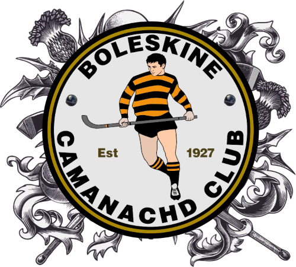

A growing archive of moments — matches, milestones, and Highland memories from Boleskine Camanachd Club.
Do you have photographs — old or new — from matches, club events, or Highland life that you'd like to contribute to the gallery? We'd love to hear from you.